前文说明了SPU和SKU，本文重点在商品管理的代码上：
- 商品新增
- 商品查询
- 门户的环境搭建
1.商品新增
当我们点击新增商品按钮：
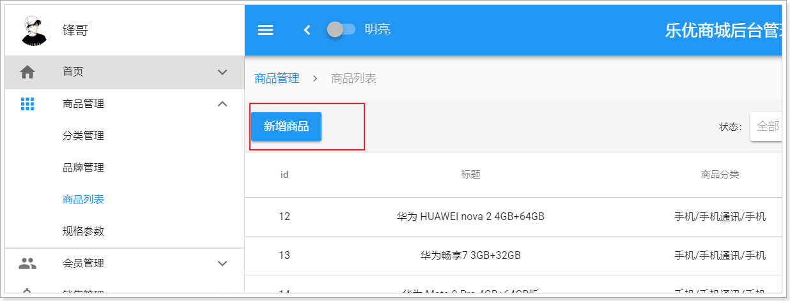
就会出现一个弹窗：
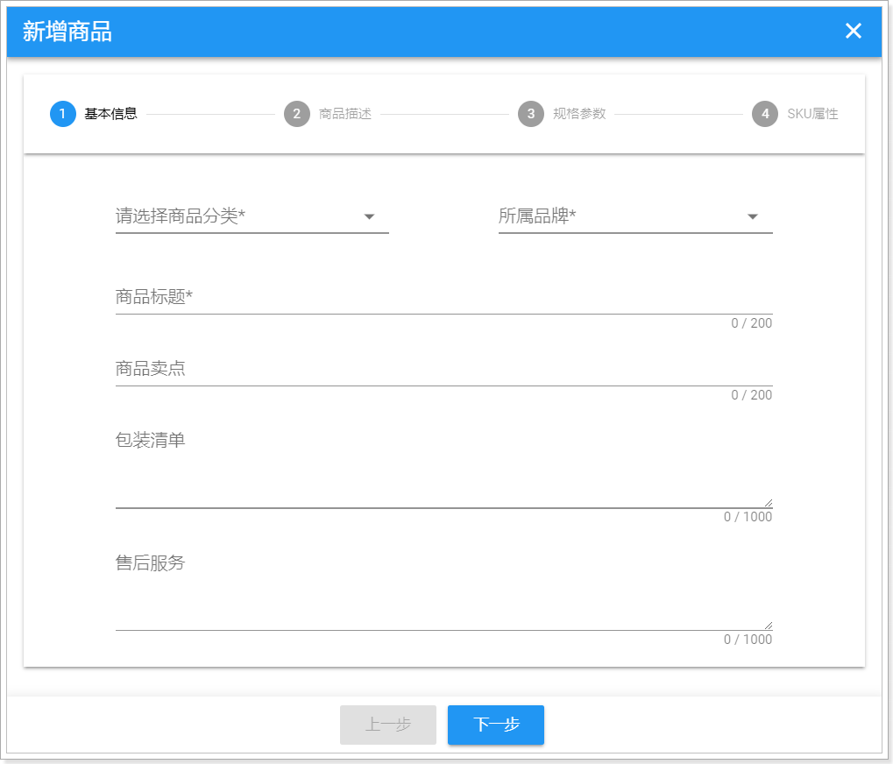
里面把商品的数据分为了4部分来填写：
- 基本信息：主要是一些简单的文本数据，包含了SPU和SpuDetail的部分数据，如
- 商品分类：是SPU中的
cid1，cid2，cid3属性 - 品牌：是spu中的
brandId属性 - 标题：是spu中的
title属性 - 子标题：是spu中的
subTitle属性 - 售后服务：是SpuDetail中的
afterService属性 - 包装列表：是SpuDetail中的
packingList属性
- 商品分类：是SPU中的
- 商品描述：是SpuDetail中的
description属性，数据较多，所以单独放一个页面 - 规格参数：商品规格信息，对应SpuDetail中的
genericSpec属性 - SKU属性：spu下的所有Sku信息
对应到页面中的四个stepper-content：
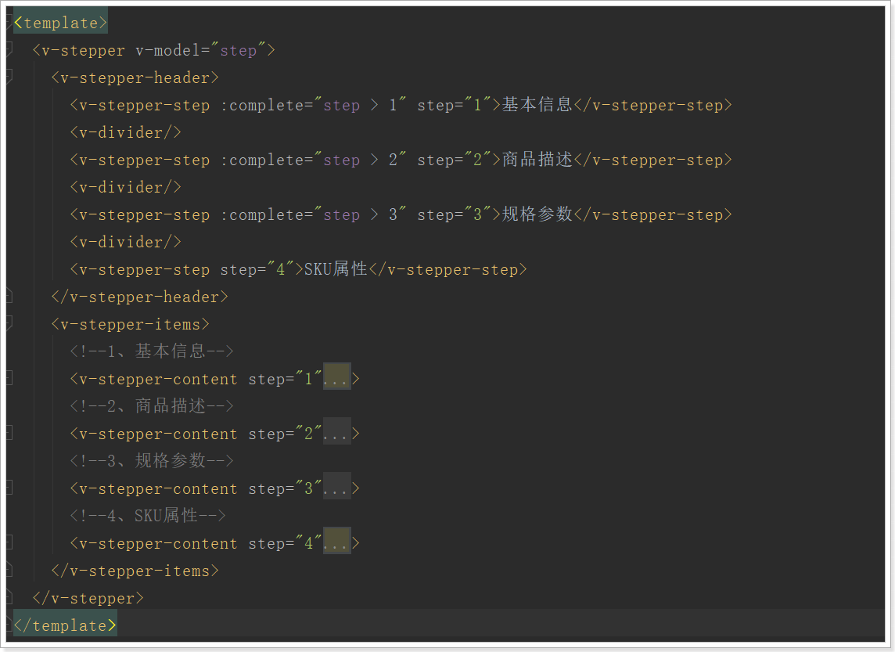
1.1.弹窗事件
弹窗是一个独立组件：
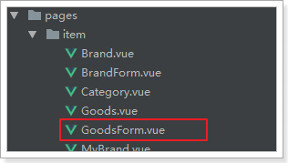
并且在Goods组件中已经引用它：
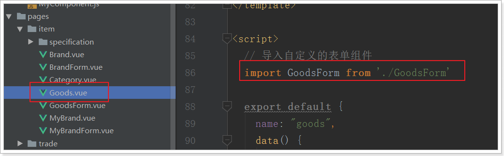
并且在页面中渲染：
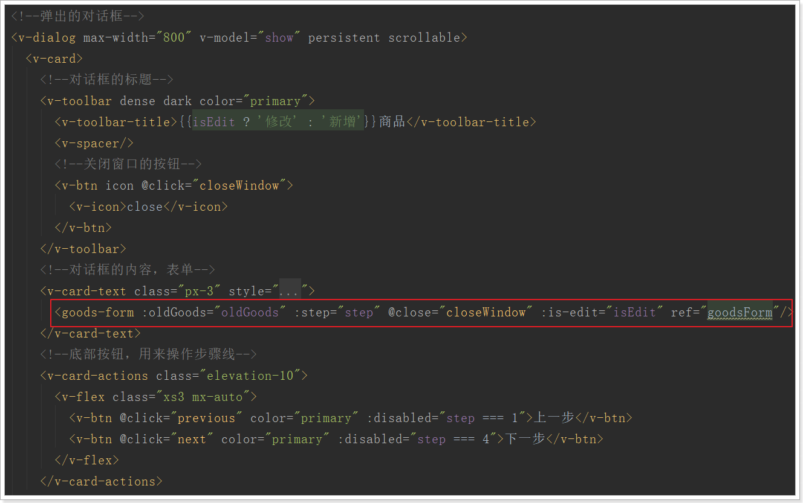
在新增商品按钮的点击事件中，改变这个dialog的show属性：

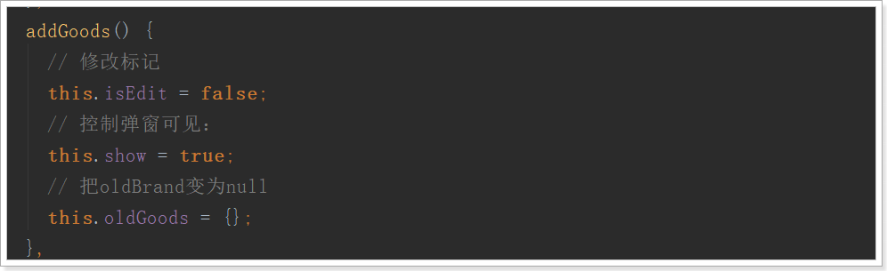
1.2.基本数据
我们先来看下基本数据：

1.2.1.商品分类
商品分类信息查询我们之前已经做过，所以这里的级联选框已经实现完成：
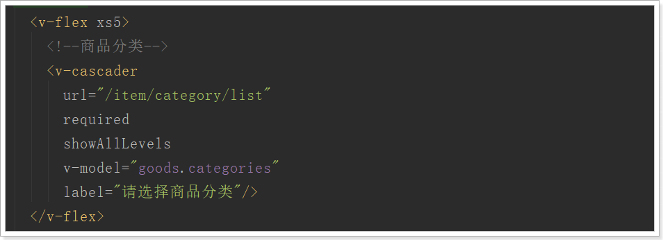
刷新页面，可以看到请求已经发出：
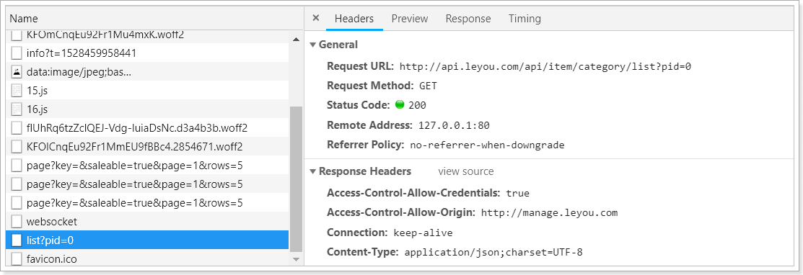

效果：
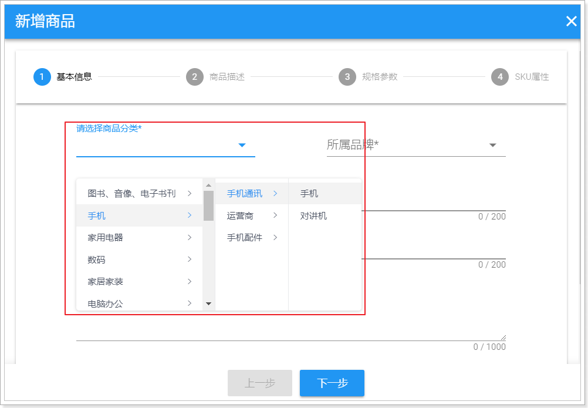
1.2.2.品牌选择
1.2.2.1页面
品牌也是一个下拉选框，不过其选项是不确定的，只有当用户选择了商品分类，才会把这个分类下的所有品牌展示出来。
所以页面编写了watch函数，监控商品分类的变化，每当商品分类值有变化，就会发起请求，查询品牌列表：
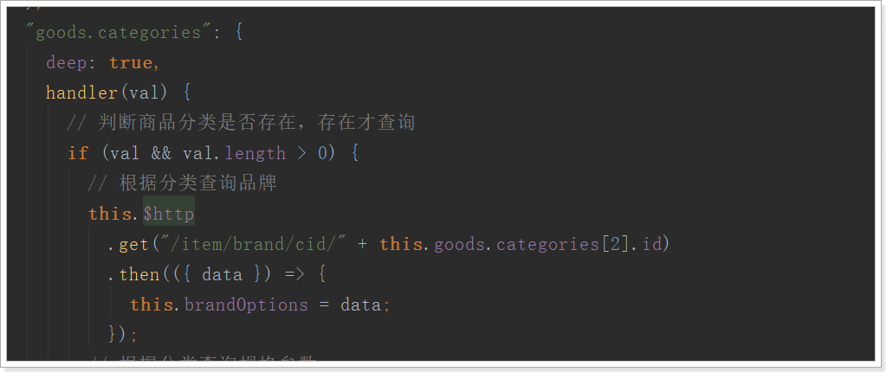
选择商品分类后，可以看到请求发起：
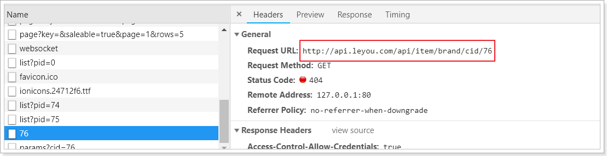
接下来，我们只要编写后台接口，根据商品分类id，查询对应品牌即可。
1.2.2.2后台接口
页面需要去后台查询品牌信息，我们自然需要提供：
请求方式：GET
请求路径：/brand/cid/{cid}
请求参数：cid
响应数据：品牌集合
BrandController
@GetMapping("cid/{cid}")
public ResponseEntity<List<Brand>> queryBrandsByCid(@PathVariable("cid")Long cid){
List<Brand> brands = this.brandService.queryBrandsByCid(cid);
if (CollectionUtils.isEmpty(brands)) {
return ResponseEntity.notFound().build();
}
return ResponseEntity.ok(brands);
}
BrandService
public List<Brand> queryBrandsByCid(Long cid) {
return this.brandMapper.selectBrandByCid(cid);
}
BrandMapper
根据分类查询品牌有中间表，需要自己编写Sql：
@Select("SELECT b.* from tb_brand b INNER JOIN tb_category_brand cb on b.id=cb.brand_id where cb.category_id=#{cid}")
List<Brand> selectBrandByCid(Long cid);
效果：

1.2.3.其它文本框
剩余的几个属性：标题、子标题等都是普通文本框，我们直接填写即可，没有需要特别注意的。
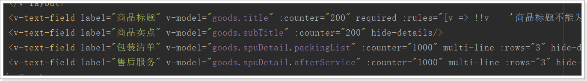
1.3.商品描述
商品描述信息比较复杂，而且图文并茂，甚至包括视频。
这样的内容，一般都会使用富文本编辑器。
1.3.1.什么是富文本编辑器
百度百科：

通俗来说：富文本，就是比较丰富的文本编辑器。普通的框只能输入文字，而富文本还能给文字加颜色样式等。
富文本编辑器有很多，例如：KindEditor、Ueditor。但并不原生支持vue
但是我们今天要说的，是一款支持Vue的富文本编辑器：vue-quill-editor
1.3.2.Vue-Quill-Editor
GitHub的主页：https://github.com/surmon-china/vue-quill-editor
Vue-Quill-Editor是一个基于Quill的富文本编辑器：Quill的官网

1.3.3.使用指南
使用非常简单：已经在项目中集成。以下步骤不需操作，仅供参考
第一步：安装，使用npm命令：
npm install vue-quill-editor --save
第二步：加载，在js中引入：
全局引入：
import Vue from 'vue'
import VueQuillEditor from 'vue-quill-editor'
const options = {}; /* { default global options } */
Vue.use(VueQuillEditor, options); // options可选
局部引入：
import 'quill/dist/quill.core.css'
import 'quill/dist/quill.snow.css'
import 'quill/dist/quill.bubble.css'
import {quillEditor} from 'vue-quill-editor'
var vm = new Vue({
components:{
quillEditor
}
})
我们这里采用局部引用：
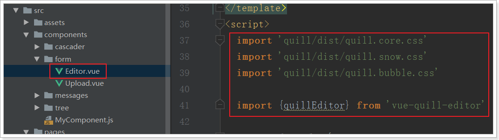
第三步：页面使用：
<quill-editor v-model="goods.spuDetail.description" :options="editorOption"/>
1.3.4.自定义的富文本编辑器
不过这个组件有个小问题，就是图片上传的无法直接上传到后台，因此我们对其进行了封装，支持了图片的上传。
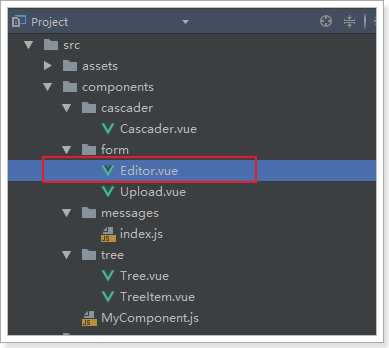
使用也非常简单：
<v-stepper-content step="2">
<v-editor v-model="goods.spuDetail.description" upload-url="/upload/image"/>
</v-stepper-content>
- upload-url：是图片上传的路径
- v-model：双向绑定，将富文本编辑器的内容绑定到goods.spuDetail.description
1.3.5.效果
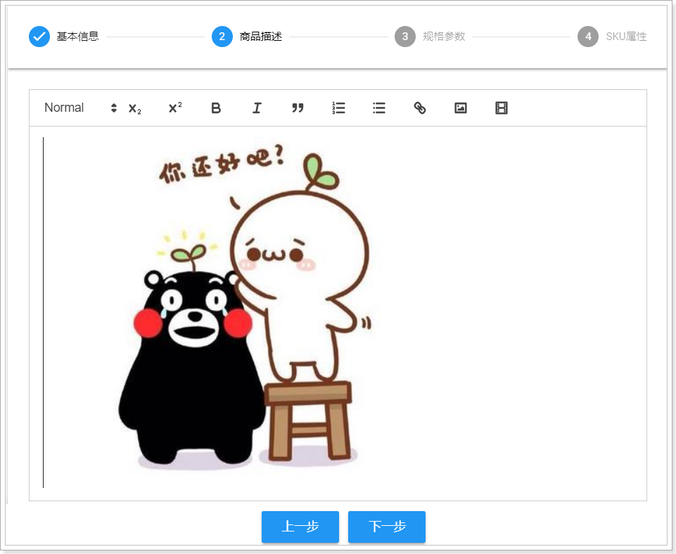
1.4.商品规格参数
规格参数的查询我们之前也已经编写过接口，因为商品规格参数也是与商品分类绑定，所以需要在商品分类变化后去查询，我们也是通过watch监控来实现：

可以看到这里是根据商品分类id查询规格参数：SpecParam。我们之前写过一个根据gid（分组id）来查询规格参数的接口，我们接下来完成根据分类id查询规格参数。
改造查询规格参数接口
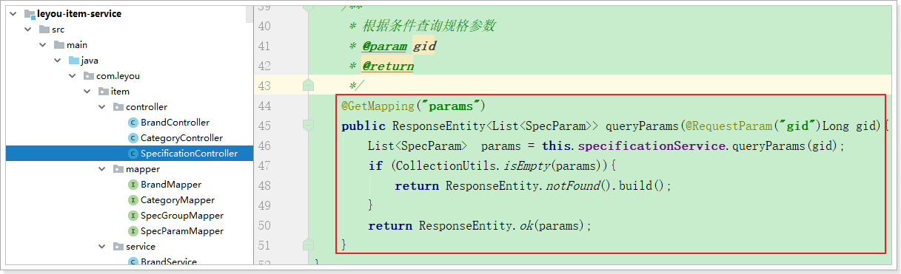
我们在原来的根据 gid（规格组id)查询规格参数的接口上，添加一个参数：cid，即商品分类id。
等一下， 考虑到以后可能还会根据是否搜索、是否为通用属性等条件过滤，我们多添加几个过滤条件：
@GetMapping("params")
public ResponseEntity<List<SpecParam>> queryParams(
@RequestParam(value = "gid", required = false)Long gid,
@RequestParam(value = "cid", required = false)Long cid,
@RequestParam(value = "generic", required = false)Boolean generic,
@RequestParam(value = "searching", required = false)Boolean searching
){
List<SpecParam> params = this.specificationService.queryParams(gid, cid, generic, searching);
if (CollectionUtils.isEmpty(params)){
return ResponseEntity.notFound().build();
}
return ResponseEntity.ok(params);
}
改造SpecificationService：
/**
* 根据gid查询规格参数
* @param gid
* @return
*/
public List<SpecParam> queryParams(Long gid, Long cid, Boolean generic, Boolean searching) {
SpecParam record = new SpecParam();
record.setGroupId(gid);
record.setCid(cid);
record.setGeneric(generic);
record.setSearching(searching);
return this.specParamMapper.select(record);
}
如果param中有属性为null，则不会把属性作为查询条件，因此该方法具备通用性，即可根据gid查询，也可根据cid查询。
测试：
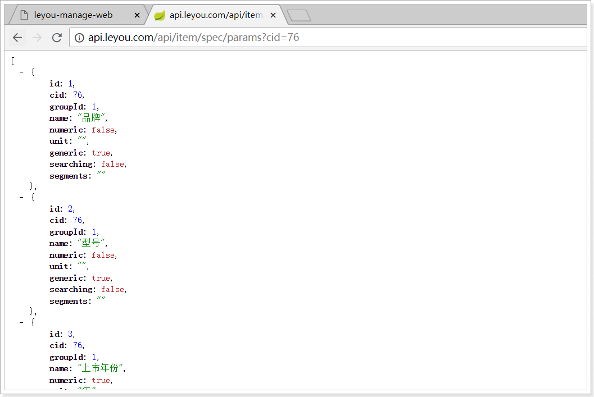
刷新页面测试：
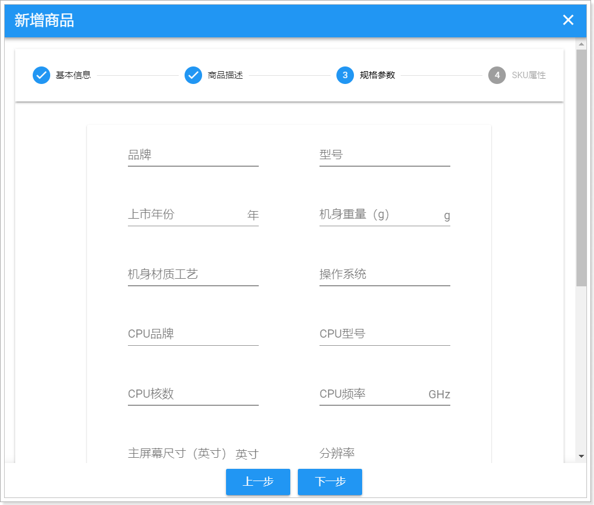
1.5.SKU信息
Sku属性是SPU下的每个商品的不同特征，如图：

当我们填写一些属性后，会在页面下方生成一个sku表格，大家可以计算下会生成多少个不同属性的Sku呢？
当你选择了上图中的这些选项时：
- 颜色共2种：迷夜黑，勃艮第红，绚丽蓝
- 内存共2种：4GB，6GB
- 机身存储1种：64GB，128GB
此时会产生多少种SKU呢？ 应该是 3 * 2 * 2 = 12种，这其实就是在求笛卡尔积。
我们会在页面下方生成一个sku的表格：

1.6.页面表单提交
在sku列表的下方，有一个提交按钮：

并且绑定了点击事件：

点击后会组织数据并向后台提交：
submit() {
// 表单校验。
if(!this.$refs.basic.validate){
this.$message.error("请先完成表单内容！");
}
// 先处理goods，用结构表达式接收,除了categories外，都接收到goodsParams中
const {
categories: [{ id: cid1 }, { id: cid2 }, { id: cid3 }],
...goodsParams
} = this.goods;
// 处理规格参数
const specs = {};
this.specs.forEach(({ id,v }) => {
specs[id] = v;
});
// 处理特有规格参数模板
const specTemplate = {};
this.specialSpecs.forEach(({ id, options }) => {
specTemplate[id] = options;
});
// 处理sku
const skus = this.skus
.filter(s => s.enable)
.map(({ price, stock, enable, images, indexes, ...rest }) => {
// 标题，在spu的title基础上，拼接特有规格属性值
const title = goodsParams.title + " " + Object.values(rest).map(v => v.v).join(" ");
const obj = {};
Object.values(rest).forEach(v => {
obj[v.id] = v.v;
});
return {
price: this.$format(price), // 价格需要格式化
stock,
indexes,
enable,
title, // 基本属性
images: images ? images.join(",") : '', // 图片
ownSpec: JSON.stringify(obj) // 特有规格参数
};
});
Object.assign(goodsParams, {
cid1,
cid2,
cid3, // 商品分类
skus // sku列表
});
goodsParams.spuDetail.genericSpec = JSON.stringify(specs);
goodsParams.spuDetail.specialSpec = JSON.stringify(specTemplate);
// 提交到后台
this.$http({
method: this.isEdit ? "put" : "post",
url: "/item/goods",
data: goodsParams
})
.then(() => {
// 成功，关闭窗口
this.$emit("close");
// 提示成功
this.$message.success("保存成功了");
})
.catch(() => {
this.$message.error("保存失败！");
});
}
点击提交，查看控制台提交的数据格式：
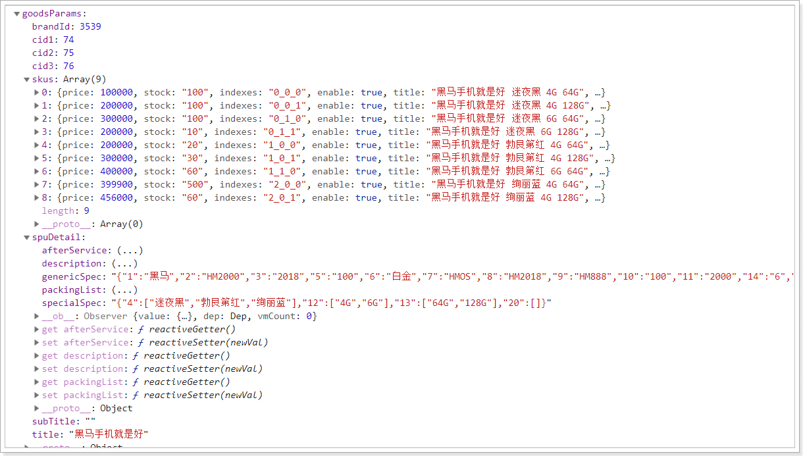
整体是一个json格式数据，包含Spu表所有数据：
- brandId：品牌id
- cid1、cid2、cid3：商品分类id
- subTitle：副标题
- title：标题
- spuDetail：是一个json对象，代表商品详情表数据
- afterService：售后服务
- description：商品描述
- packingList：包装列表
- specialSpec：sku规格属性模板
- genericSpec：通用规格参数
- skus：spu下的所有sku数组，元素是每个sku对象：
- title：标题
- images：图片
- price：价格
- stock：库存
- ownSpec：特有规格参数
- indexes：特有规格参数的下标
1.7.后台实现
1.7.1.实体类
SPU和SpuDetail实体类已经添加过，添加Sku和Stock对象：

Sku
@Table(name = "tb_sku")
public class Sku {
@Id
@GeneratedValue(strategy = GenerationType.IDENTITY)
private Long id;
private Long spuId;
private String title;
private String images;
private Long price;
private String ownSpec;// 商品特殊规格的键值对
private String indexes;// 商品特殊规格的下标
private Boolean enable;// 是否有效，逻辑删除用
private Date createTime;// 创建时间
private Date lastUpdateTime;// 最后修改时间
@Transient
private Integer stock;// 库存
}
注意：这里保存了一个库存字段，在数据库中是另外一张表保存的，方便查询。
Stock
@Table(name = "tb_stock")
public class Stock {
@Id
private Long skuId;
private Integer seckillStock;// 秒杀可用库存
private Integer seckillTotal;// 已秒杀数量
private Integer stock;// 正常库存
}
1.7.2.GoodsController
结合浏览器页面控制台，可以发现：
请求方式：POST
请求路径：/goods
请求参数：Spu的json格式的对象，spu中包含spuDetail和Sku集合。这里我们该怎么接收？我们之前定义了一个SpuBo对象，作为业务对象。这里也可以用它，不过需要再扩展spuDetail和skus字段：
public class SpuBo extends Spu {
String cname;// 商品分类名称
String bname;// 品牌名称
SpuDetail spuDetail;// 商品详情
List<Sku> skus;// sku列表
}
- 返回类型：无
在GoodsController中添加新增商品的代码：
@PostMapping("goods")
public ResponseEntity<Void> saveGoods(@RequestBody SpuBo spuBo){
this.goodsService.saveGoods(spuBo);
return ResponseEntity.status(HttpStatus.CREATED).build();
}
注意：通过@RequestBody注解来接收Json请求
1.7.3.GoodsService
这里的逻辑比较复杂，我们除了要对SPU新增以外，还要对SpuDetail、Sku、Stock进行保存
/**
* 新增商品
* @param spuBo
*/
@Transactional
public void saveGoods(SpuBo spuBo) {
// 新增spu
// 设置默认字段
spuBo.setId(null);
spuBo.setSaleable(true);
spuBo.setValid(true);
spuBo.setCreateTime(new Date());
spuBo.setLastUpdateTime(spuBo.getCreateTime());
this.spuMapper.insertSelective(spuBo);
// 新增spuDetail
SpuDetail spuDetail = spuBo.getSpuDetail();
spuDetail.setSpuId(spuBo.getId());
this.spuDetailMapper.insertSelective(spuDetail);
saveSkuAndStock(spuBo);
}
private void saveSkuAndStock(SpuBo spuBo) {
spuBo.getSkus().forEach(sku -> {
// 新增sku
sku.setSpuId(spuBo.getId());
sku.setCreateTime(new Date());
sku.setLastUpdateTime(sku.getCreateTime());
this.skuMapper.insertSelective(sku);
// 新增库存
Stock stock = new Stock();
stock.setSkuId(sku.getId());
stock.setStock(sku.getStock());
this.stockMapper.insertSelective(stock);
});
}
1.7.4.Mapper
都是通用Mapper，略
目录结构：
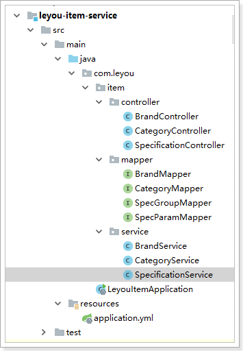
2.商品修改
2.1.编辑按钮点击事件
在商品详情页，每一个商品后面，都会有一个编辑按钮：
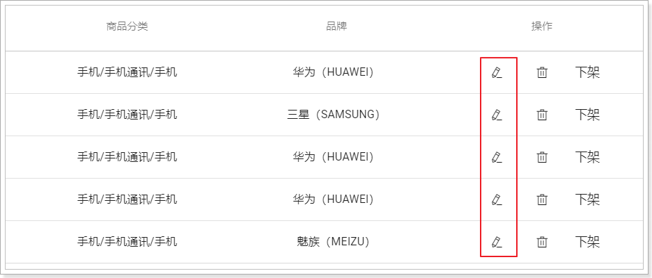
点击这个按钮，就会打开一个商品编辑窗口，我们看下它所绑定的点击事件：（在item/Goods.vue）

对应的方法：

可以看到这里发起了两个请求，在查询商品详情和sku信息。
因为在商品列表页面，只有spu的基本信息：id、标题、品牌、商品分类等。比较复杂的商品详情（spuDetail)和sku信息都没有，编辑页面要回显数据，就需要查询这些内容。
因此，接下来我们就编写后台接口，提供查询服务接口。
2.2.查询SpuDetail接口
GoodsController
需要分析的内容：
- 请求方式：GET
- 请求路径：/spu/detail/{id}
- 请求参数：id，应该是spu的id
- 返回结果：SpuDetail对象
@GetMapping("spu/detail/{spuId}")
public ResponseEntity<SpuDetail> querySpuDetailBySpuId(@PathVariable("spuId")Long spuId){
SpuDetail spuDetail = this.goodsService.querySpuDetailBySpuId(spuId);
if (spuDetail == null) {
return ResponseEntity.notFound().build();
}
return ResponseEntity.ok(spuDetail);
}
GoodsService
/**
* 根据spuId查询spuDetail
* @param spuId
* @return
*/
public SpuDetail querySpuDetailBySpuId(Long spuId) {
return this.spuDetailMapper.selectByPrimaryKey(spuId);
}
测试

2.3.查询sku
分析
- 请求方式：Get
- 请求路径：/sku/list
- 请求参数：id，应该是spu的id
- 返回结果：sku的集合
GoodsController
@GetMapping("sku/list")
public ResponseEntity<List<Sku>> querySkusBySpuId(@RequestParam("id")Long spuId){
List<Sku> skus = this.goodsService.querySkusBySpuId(spuId);
if (CollectionUtils.isEmpty(skus)) {
return ResponseEntity.notFound().build();
}
return ResponseEntity.ok(skus);
}
GoodsService
需要注意的是，为了页面回显方便，我们一并把sku的库存stock也查询出来
/**
* 根据spuId查询sku的集合
* @param spuId
* @return
*/
public List<Sku> querySkusBySpuId(Long spuId) {
Sku sku = new Sku();
sku.setSpuId(spuId);
List<Sku> skus = this.skuMapper.select(sku);
skus.forEach(s -> {
Stock stock = this.stockMapper.selectByPrimaryKey(s.getId());
s.setStock(stock.getStock());
});
return skus;
}
测试：
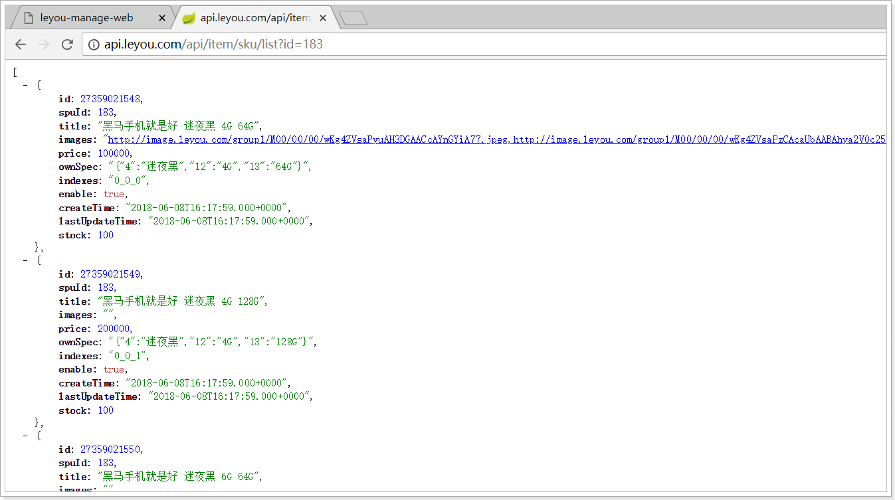
2.4.页面回显
随便点击一个编辑按钮，发现数据回显完成：
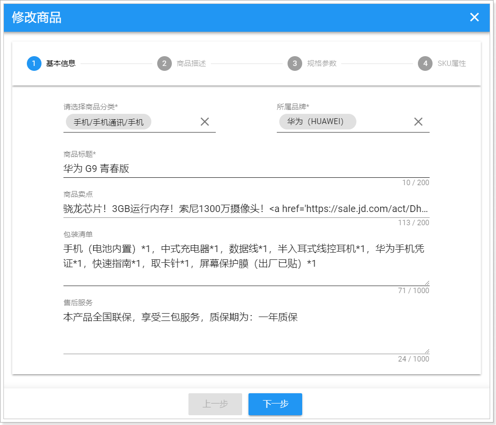

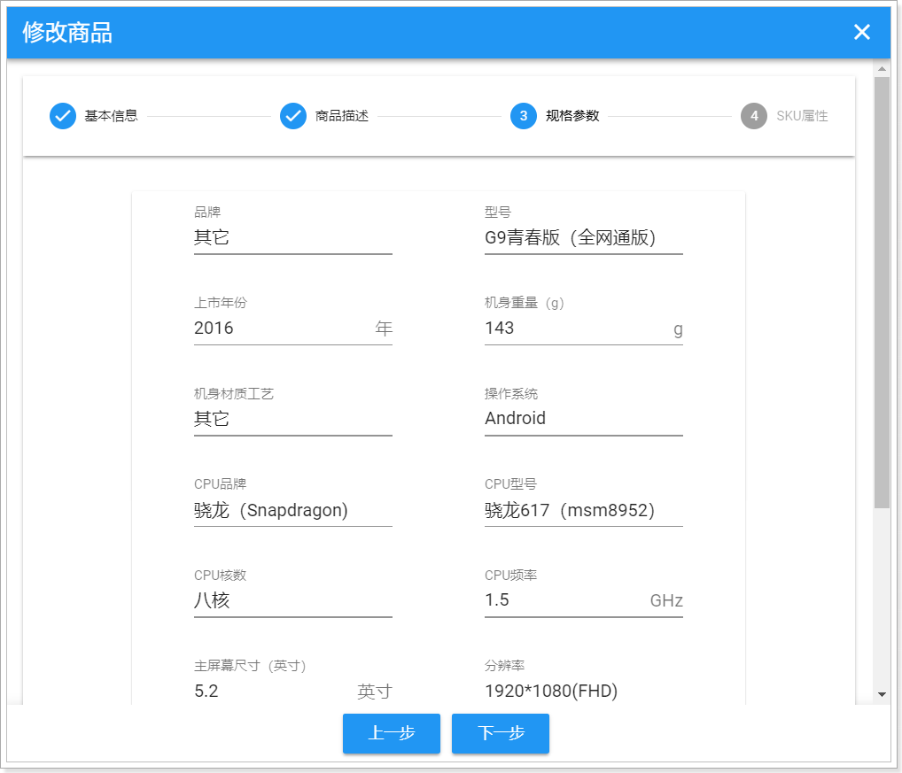
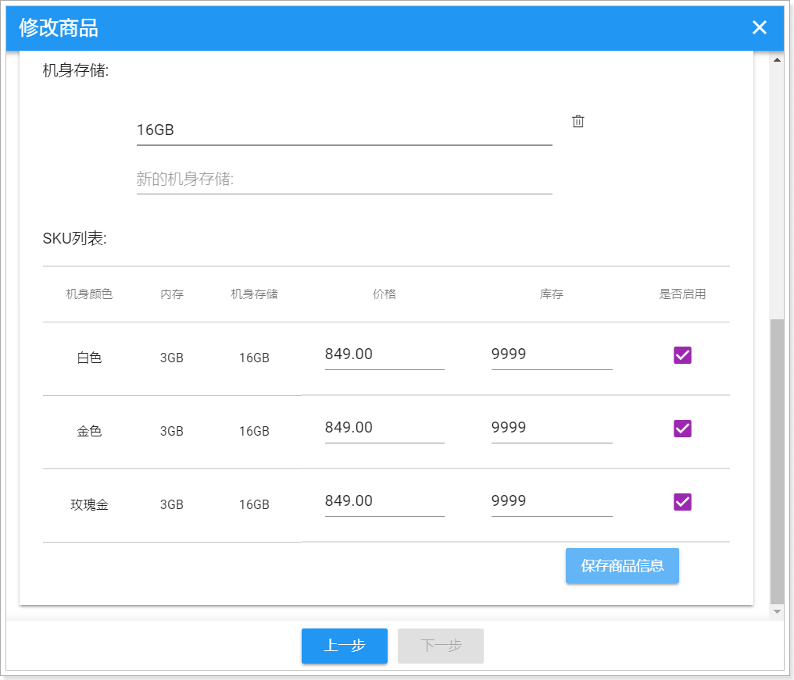
2.5.页面提交
这里的保存按钮与新增其实是同一个，因此提交的逻辑也是一样的，这里不再赘述。
随便修改点数据，然后点击保存，可以看到浏览器已经发出请求：
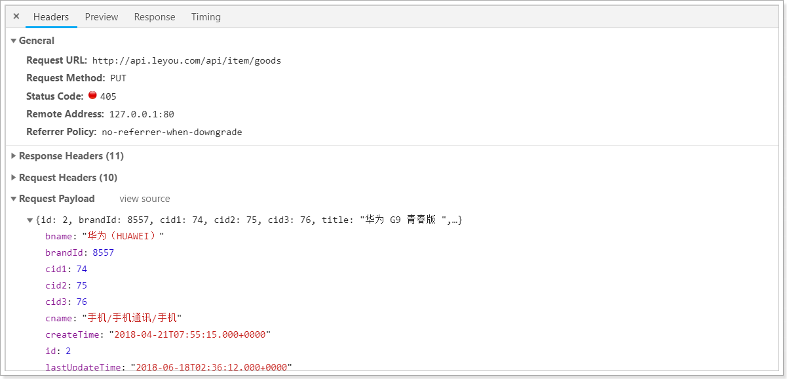
2.6.后台实现
接下来，我们编写后台，实现修改商品接口。
2.6.1.GoodsController
- 请求方式：PUT
- 请求路径：/
- 请求参数：Spu对象
- 返回结果：无
@PutMapping("goods")
public ResponseEntity<Void> updateGoods(@RequestBody SpuBo spuBo){
this.goodsService.updateGoods(spuBo);
return ResponseEntity.status(HttpStatus.NO_CONTENT).build();
}
2.6.2.GoodsService
spu数据可以修改，但是SKU数据无法修改，因为有可能之前存在的SKU现在已经不存在了，或者以前的sku属性都不存在了。比如以前内存有4G，现在没了。
因此这里直接删除以前的SKU，然后新增即可。
代码：
@Transactional
public void update(SpuBo spu) {
// 查询以前sku
List<Sku> skus = this.querySkuBySpuId(spu.getId());
// 如果以前存在，则删除
if(!CollectionUtils.isEmpty(skus)) {
List<Long> ids = skus.stream().map(s -> s.getId()).collect(Collectors.toList());
// 删除以前库存
Example example = new Example(Stock.class);
example.createCriteria().andIn("skuId", ids);
this.stockMapper.deleteByExample(example);
// 删除以前的sku
Sku record = new Sku();
record.setSpuId(spu.getId());
this.skuMapper.delete(record);
}
// 新增sku和库存
saveSkuAndStock(spuBo);
// 更新spu
spu.setLastUpdateTime(new Date());
spu.setCreateTime(null);
spu.setValid(null);
spu.setSaleable(null);
this.spuMapper.updateByPrimaryKeySelective(spu);
// 更新spu详情
this.spuDetailMapper.updateByPrimaryKeySelective(spu.getSpuDetail());
}
2.6.3.mapper
与以前一样。
2.7.其它
商品的删除、上下架大家自行实现。
3.搭建前台系统
后台系统的内容暂时告一段落，有了商品，接下来我们就要在页面展示商品，给用户提供浏览和购买的入口，那就是我们的门户系统。
门户系统面向的是用户，安全性很重要，而且搜索引擎对于单页应用并不友好。因此我们的门户系统不再采用与后台系统类似的SPA（单页应用）。
依然是前后端分离，不过前端的页面会使用独立的html，在每个页面中使用vue来做页面渲染。
3.1.静态资源
webpack打包多页应用配置比较繁琐，项目结构也相对复杂。这里为了简化开发（毕竟我们不是专业的前端人员），我们不再使用webpack，而是直接编写原生的静态HTML。
3.1.1.创建工程
创建一个新的工程：

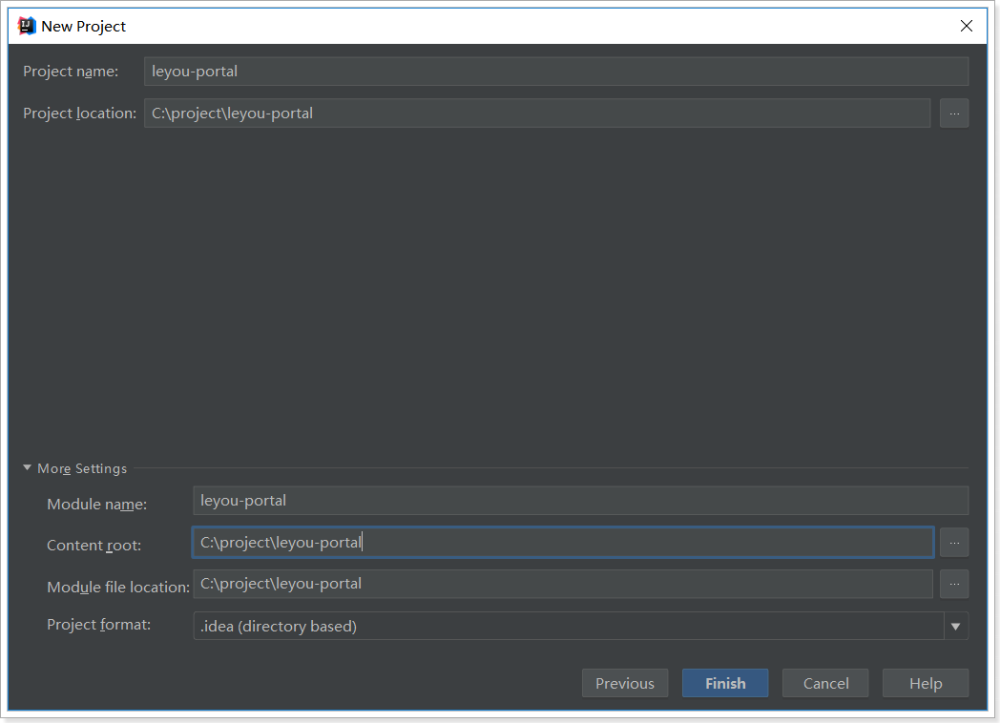
3.1.2.导入静态资源
将课前资料中的leyou-portal解压，并复制到这个项目下

解压缩：

项目结构：
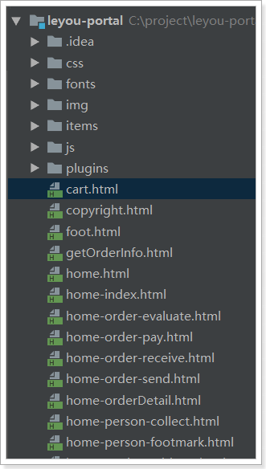
3.2.live-server
没有webpack，我们就无法使用webpack-dev-server运行这个项目，实现热部署。
所以，这里我们使用另外一种热部署方式：live-server，
3.2.1.简介
地址；https://www.npmjs.com/package/live-server
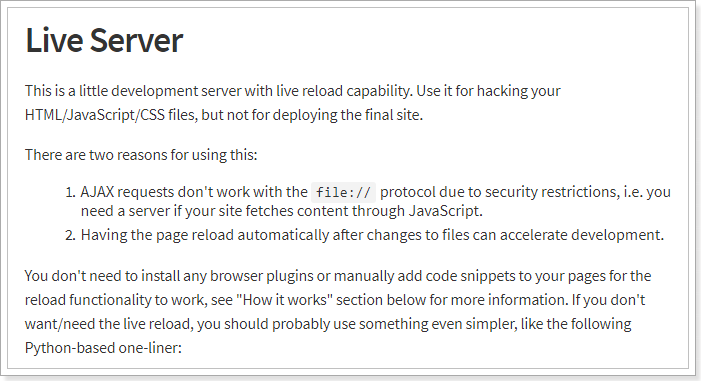
这是一款带有热加载功能的小型开发服务器。用它来展示你的HTML / JavaScript / CSS，但不能用于部署最终的网站。
3.2.2.安装和运行参数
安装，使用npm命令即可，这里建议全局安装，以后任意位置可用
npm install -g live-server
运行时，直接输入命令：
live-server
另外，你可以在运行命令后，跟上一些参数以配置：
--port=NUMBER- 选择要使用的端口，默认值：PORT env var或8080--host=ADDRESS- 选择要绑定的主机地址，默认值：IP env var或0.0.0.0（“任意地址”）--no-browser- 禁止自动Web浏览器启动--browser=BROWSER- 指定使用浏览器而不是系统默认值--quiet | -q- 禁止记录--verbose | -V- 更多日志记录（记录所有请求，显示所有侦听的IPv4接口等）--open=PATH- 启动浏览器到PATH而不是服务器root--watch=PATH- 用逗号分隔的路径来专门监视变化（默认值：观看所有内容）--ignore=PATH- 要忽略的逗号分隔的路径字符串（anymatch -compatible definition）--ignorePattern=RGXP-文件的正则表达式忽略（即.*\.jade）（不推荐使用赞成--ignore）--middleware=PATH- 导出要添加的中间件功能的.js文件的路径; 可以是没有路径的名称，也可以是引用middleware文件夹中捆绑的中间件的扩展名--entry-file=PATH- 提供此文件（服务器根目录）代替丢失的文件（对单页应用程序有用）--mount=ROUTE:PATH- 在定义的路线下提供路径内容（可能有多个定义）--spa- 将请求从/ abc转换为/＃/ abc（方便单页应用）--wait=MILLISECONDS- （默认100ms）等待所有更改，然后重新加载--htpasswd=PATH- 启用期待位于PATH的htpasswd文件的http-auth--cors- 为任何来源启用CORS（反映请求源，支持凭证的请求）--https=PATH- 到HTTPS配置模块的路径--proxy=ROUTE:URL- 代理ROUTE到URL的所有请求--help | -h- 显示简洁的使用提示并退出--version | -v- 显示版本并退出
3.2.3.测试
我们进入leyou-portal目录，输入命令：
live-server --port=9002
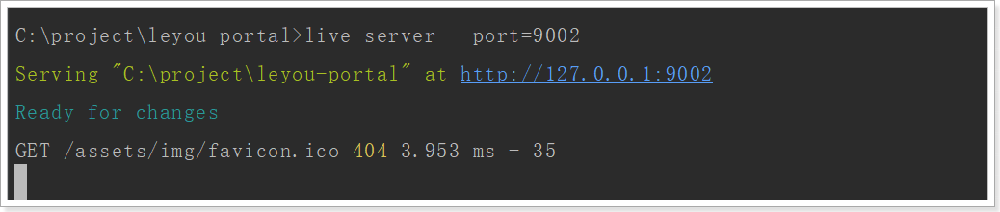
3.3.域名访问
现在我们访问只能通过：http://127.0.0.1:9002
我们希望用域名访问：http://www.leyou.com
第一步，修改hosts文件，添加一行配置：
127.0.0.1 www.leyou.com
第二步，修改nginx配置，将www.leyou.com反向代理到127.0.0.1:9002
server {
listen 80;
server_name www.leyou.com;
proxy_set_header X-Forwarded-Host $host;
proxy_set_header X-Forwarded-Server $host;
proxy_set_header X-Forwarded-For $proxy_add_x_forwarded_for;
location / {
proxy_pass http://127.0.0.1:9002;
proxy_connect_timeout 600;
proxy_read_timeout 600;
}
}
重新加载nginx配置：nginx.exe -s reload

3.4.common.js
为了方便后续的开发，我们在前台系统中定义了一些工具，放在了common.js中：

部分代码截图：
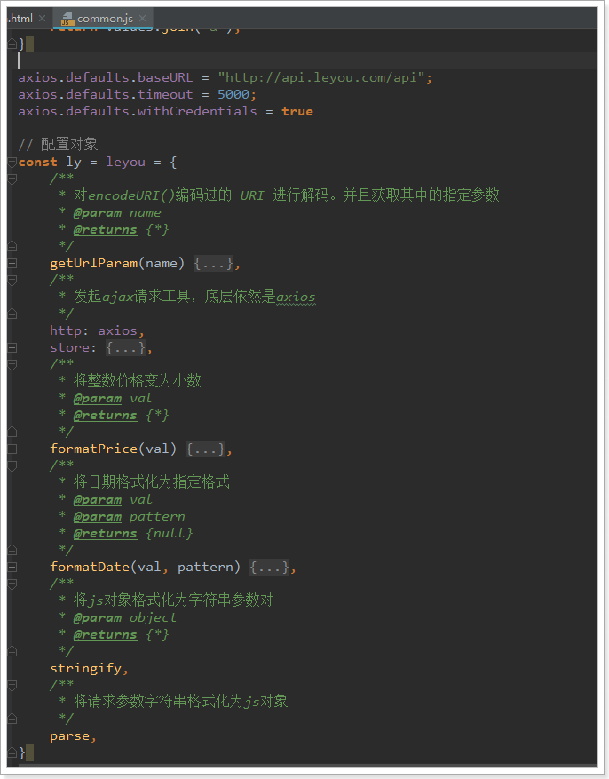
首先对axios进行了一些全局配置，请求超时时间，请求的基础路径，是否允许跨域操作cookie等
定义了对象 ly ，也叫leyou，包含了下面的属性：
- getUrlParam(key)：获取url路径中的参数
- http：axios对象的别名。以后发起ajax请求，可以用ly.http.get()
- store：localstorage便捷操作，后面用到再详细说明
- formatPrice：格式化价格，如果传入的是字符串，则扩大100被并转为数字，如果传入是数字，则缩小100倍并转为字符串
- formatDate(val, pattern)：对日期对象val按照指定的pattern模板进行格式化
- stringify：将对象转为参数字符串
- parse：将参数字符串变为js对象